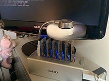

Битко́йн (англ. Bitcoin, от bit — «бит» и coin — «монета») — пиринговая платёжная система, использующая одноимённую единицу для учёта операций и одноимённый протокол передачи данных. Для обеспечения функционирования и защиты системы используются криптографические методы. Вся информация о транзакциях между адресами системы доступна в открытом виде[3]. Минимальная передаваемая величина (наименьшая величина дробления) — 10−8 биткойна — получила название «сатоши» в честь создателя Сатоси Накамото, хотя сам он использовал в таких случаях слово «цент»[4]. Электронный платёж между двумя сторонами происходит без посредников и необратим — нет механизма отмены подтверждённой операции (включая случаи, когда платёж был отправлен на ошибочный или несуществующий адрес, или когда транзакция была подписана закрытым ключом, который стал известен другим лицам). Средства никто не может заблокировать (арестовать), даже временно, за исключением владельца закрытого ключа (или лица, которому он стал известен). Но предусмотренная технология мультиподписи позволяет привлечь третью сторону (арбитра) и реализовать «обратимые транзакции». При помощи специального языка сценариев есть возможность реализовать и другие варианты умных контрактов[5][6][7], однако он не доступен из графического интерфейса и не полон по Тьюрингу, в отличие от более новых блокчейновых систем (см. Ethereum[8]). Разные авторы по-разному классифицируют биткойны. Чаще всего встречаются варианты: криптовалюта[9], виртуальная валюта[9][10][11], цифровая валюта[12][13], электронная наличность[14]. Биткойны могут использоваться для обмена на товары или услуги у продавцов, которые согласны их принимать. Обмен на обычные валюты происходит через онлайн-сервис обмена цифровых валют, другие платёжные системы, обменные пункты или непосредственно между заинтересованными сторонами. Комиссия за проведение операций назначается отправителем добровольно, размер комиссии влияет на приоритет при обработке транзакции. Обычно программа-клиент подсказывает рекомендуемый размер комиссии. Транзакции без комиссии возможны и также обрабатываются, однако не рекомендуются, поскольку время их обработки неизвестно и может быть довольно велико. Одна из главных особенностей системы — полная децентрализация: нет центрального администратора или какого-либо его аналога. Необходимым и достаточным элементом этой платёжной системы является базовая программа-клиент (имеет открытый исходный код). Запущенные на множестве компьютеров программы-клиенты соединяются между собой в одноранговую сеть, каждый узел которой равноправен и самодостаточен. Невозможно государственное или частное управление системой, в том числе изменение суммарного количества биткойнов. Заранее известны объём и время выпуска новых биткойнов, но распределяются они относительно случайно среди тех, кто использует своё оборудование для вычислений[15], результаты которых являются механизмом регулирования и подтверждения правомочности операций в системе «Биткойн» (см. метод доказательства выполнения работы[16]).
В качестве сокращения вместо «биткойн» часто пишут латинские BTC. Такая запись похожа на коды валют, однако подобный код международным стандартом ISO 4217 пока не присвоен. 7 октября 2014 года Bitcoin Foundation опубликовала планы добиться стандартизации кода для биткойна. Запись BTCпротиворечит принятой в стандарте системе — именовать «глобальные товары» начиная с X (например, золото имеет код XAU). В качестве кандидата рассматривают вариант XBT[17]. При указании BTC или XBT имеется в виду расчётная единица, а не сеть, набор алгоритмов или какая-либо другая сущность, относящаяся к данной тематике.
Знак биткойна « » включён в стандарт Юникода версии 10.0, ему присвоен номер U+20BF (₿)[18]. Иногда применяют символ ฿ — знак тайского бата, но он поддерживается не всеми кодировками и шрифтами.
URI-схема «bitcoin:», для операций с биткойнами через гиперссылки, официально включена в спецификации WHATWG для HTML5.
Биткойн также планируется добавить в список валют в Microsoft Excel.
При употреблении названия в русскоязычных текстах часто используют один из трёх вариантов:
- транскрипция «Биткойн», соответствующая правилам англо-русской практической транскрипции, используемой для передачи английских собственных имён, а также других лексических единиц, непосредственно заимствуемых из английского языка (например, терминов), для которых не существует исторически сложившейся (традиционной) передачи на русский язык; применён в заявлении Банка России; с 12 сентября 2014 года используется на сайте Bitcoin Project.
- транслитерация «Биткоин» использовалась на сайте Bitcoin Project до 12 сентября 2014 года.
- оригинальное написание латиницей;
Разное написание встречается даже в публикациях одного издания
Марк Андрессен, разработчик первого графического интернет-браузера NCSA Mosaic, считает, что на фундаментальном уровне система «Биткойн» является прорывом в области компьютерных наук, который опирается на 20 лет исследований криптографических валют и 40 лет работы в области криптографии тысяч исследователей по всему миру
В 1983 году Дэвид Чаум (англ. David Chaum) и Стефан Брэндс (англ. Stefan Brands) предложили первые протоколы «электронной наличности»
В мае 1997 года Адам Бак (англ. Adam Back) для противодействия отправке спама и DoS-атакам предложил Hashcash, основанную на системе доказательства выполнения работы. Впоследствии подобная система в другой реализации стала частью процедуры создания новых блоков в биткойн-базе.
Идеи криптовалюты «b-money» описал в 1998 году Вэй Дай (англ. Wei Dai) в рассылке шифропанков[29]. Независимо от него примерно в то же время аналогичные идеи предложил Ник Сабо (англ. Nick Szabo) для «bit-gold»[30]. Ник Сабо также предложил модель рыночного механизма, основанного на управлении инфляцией, и исследовал некоторые аспекты выявления надёжной информации в ненадёжной децентрализованной системе (задача византийских генералов).
Позднее Хэл Финни реализовал связку цепочек хеш-блоков для системы Hashcash на базе чипа для шифрования IBM в рамках спецификации TPM. Хэл Финни стал вторым участником сети Биткойн
В 2008 году человеком или группой людей под псевдонимом[32] Сатоси Накамото (англ. Satoshi Nakamoto) был опубликован файл с описанием протокола и принципа работы платёжной системы в виде одноранговой сети. По словам Сатоси, разработка началась в 2007 году[33]. В 2009 году он закончил разработку протокола и опубликовал код программы-клиента.
3 января 2009 года был сгенерирован первый блок и первые 50 биткойнов[31]. Первая транзакция по переводу биткойнов произошла 12 января 2009 года — Сатоси Накамото отправил Хэлу Финни 10 биткойнов[31]. Первый обмен биткойнов на национальные деньги произошёл в сентябре 2009 года — Марти Малми (Martti Malmi) отправил пользователю с псевдонимом NewLibertyStandard 5050 биткойнов, за которые получил на свой счёт в PayPal 5,02 доллара[31]. NewLibertyStandart предложил использовать для оценки биткойнов стоимость электроэнергии, затрачиваемой на генерацию.
Первый обмен биткойнов на реальный товар произошёл в мае 2010 года — американец Ласло Ханеч за 10 000 биткойнов получил две пиццы с доставкой
Дальнейшую разработку организует и координирует сообщество разработчиков[36], при этом любые значительные изменения в протоколе должны быть приняты большинством владельцев майнинговых пулов.
1 августа 2017 года структура блоков в блокчейне была изменена. Группа разработчиков и майнеров запустила форк «Биткойна» под названием «Bitcoin Cash»[37]. Новая криптовалюта имеет общую историю с «Биткойном»: обратную совместимость по структуре блока до 1 августа, но имеет несовместимую структуру после 1 августа.
Первоначально удалённые платежи осуществлялись прямой пересылкой наличных денег. При этом стороны сделки не обязаны были доверять друг другу. Для продавца главное — получить деньги и убедиться в их подлинности. Если всё в порядке, то к покупателю больше вопросов не будет. Для покупателя главным было иметь подтверждение отправки денег, чтобы с продавца можно было требовать исполнения обязательств. Со временем появились посредники, которым доверяли обе стороны сделки. Покупатель передавал представителю посредника деньги, а продавец в другом месте от другого представителя получал их. Физически деньги не всегда надо было транспортировать, так как мог использоваться предварительный запас. Это позволило ускорить и удешевить платежи, сделать их безопаснее. Одним из дополнительных свойств таких платёжных систем стала возможность блокировать или отменять платежи. С развитием компьютерных технологий всё чаще возникала потребность в электронных платежах. Но попытки создать «электронные деньги», которые можно было бы передавать между компьютерами так же легко и надёжно, как наличные, не приводили к успеху. Проблемой была способность компьютеров делать точную копию любой цифровой информации, что потенциально могло приводить к многократному использованию для разных платежей одних и тех же «монет»[38]. Покупатель мог оплатить товар, а потом направить точную копию электронной «монеты» другому продавцу. Лишь сторонний доверенный посредник мог гарантировать продавцам отсутствия спора о платеже. Именно контроль со стороны посредника позволяет продавцу убедиться, что у покупателя хватит средств и это не будет копия ранее кому-то уплаченных денег[38]. Обязательность посредников позволила существенно упростить систему государственного контроля за электронными платежами — достаточно было установить контроль над посредниками или обязать их контролировать «подозрительные» сделки. Требовалось также снижение транзакционных затрат, которые в некоторых случаях забирали до половины прибыли от сделки[27]. Неоднократно делались попытки создать систему удалённых платежей, которая была бы дешевле, менее зависима от посредников, но не менее надёжна и безопасна.
Марк Андрессен отмечает, что система «Биткойн» является первым практическим решением давней информационной проблемы — как обеспечить доверие между сторонами к полученной информации в ситуации, когда ни у одной из сторон нет доверия к действиям другой стороны и к открытому незащищённому каналу связи, по которому эта информация передаётся. «Биткойн» первым предоставил возможность прямой передачи прав собственности другому лицу через Интернет без привлечения внешних гарантов, при этом передача безопасна и надёжна, никто не может её оспорить[27], отсутствует обязательная комиссия за проведение операций, любые транзакции могут осуществляться для каждой из сторон бесплатно. Билл Гейтс в интервью Bloomberg сказал, что «Биткойн» показывает, насколько дешёвыми могут быть денежные переводы
Биткойны существуют только в виде записей в реплицированной распределённой базе (см. блокчейн), в которой в общедоступном открытом (нешифрованном) виде хранятся все транзакции, с указанием биткойн-адресов отправителей/получателей, но без информации о реальном владельце этих адресов[10]. В базе нет отдельных записей о текущем количестве биткойнов у какого-либо владельца. Лишь на основании цепочек транзакций становится понятным текущее количество биткойнов, связанных с тем или иным биткойн-адресом. То есть можно увидеть, что на адрес поступил 1 биткойн, а по другой транзакции на этот же адрес поступило 2 биткойна, третья транзакция отправила с этого адреса 1 биткойн. Но в базе не хранится отдельной записи, сколько всего сейчас биткойнов числится за данным адресом — просто предоставляется возможность в любой момент это легко подсчитать. Такие подсчёты автоматически делают клиентские программы, пользователь может и не замечать раздробленности информации.
Каждый пользователь системы может генерировать неограниченное количество пар ключей (алгоритм ECDSA с параметром secp256k1). Размер закрытого ключа — 256 бит, а соответствующего ему открытого ключа — 512 бит.
Основное использование ключей — создание биткойн-адреса и подтверждение правомочности формирования транзакций. Но они могут использоваться и для цифровой подписи или шифрования при переписке.
Создание новой пары ключей автономно и не требует соединения с сетью или Интернетом. Созданные ключи обычно хранят в специальном шифрованном файле wallet.dat («кошельке»). Пользователь придумывает пароль только для доступа к информации из файла «wallet.dat», то есть для доступа к своим парам ключей. Для распоряжения биткойнами наличие этого файла не является обязательным — в большинстве случаев будет достаточно каким-либо образом получить закрытый ключ.
Хранить ключи можно на любом носителе, не только на карте памяти, но и в бумажном виде. Существуют онлайн кошельки, например, Blockchain.info, Circle Snapcard или Coinbase, которые достаточно просты в использовании[40]. Но подобный инструмент снижает степень защищённости ключей, так как проблемы с сайтом такого сервиса, в том числе его взлом, могут приводить к перебоям в использовании своих биткойнов или даже их утрате.
Адреса создаются при помощи генерации асимметричной пары криптографических ключей, для чего не требуется подключения к Интернету. Человек может иметь неограниченное число адресов, создавая их по своему желанию. Каждому возможному адресу соответствует баланс, выраженный в биткойнах. Все адреса с ненулевым балансом записаны в децентрализованную цепочку блоков транзакций, защищённую от изменений. При создании адреса его баланс всегда нулевой и может быть пополнен либо отправкой биткойнов с других адресов, либо путём создания новых биткойнов и комиссионных сборов за счёт майнинга.
Биткойн-адрес является последовательностью байт, полученных в результате преобразования открытого ключа[41]. Чаще всего кодированием Base58 адрес записывают как строку длиной до 34 букв латинского алфавита и цифр, для человека является хаотичным набором символов. Адреса с небольшим количеством неслучайных символов могут быть получены путём перебора[42][43]. Первый символ адреса является всегда единицей для обычных адресов или тройкой для адресов, созданных с использованием мультиподписи.
Часть символов является контрольной суммой, проверяющей корректность основной части адреса
Передача биткойнов на адрес происходит с контролем формальной корректности адреса получателя, но без контроля реального существования ключа, который бы ему соответствовал. Так адреса 1111111111111111111114oLvT2[44] или 1BitcoinEaterAddressDontSendf59kuE, являются корректными, однако создание соответствующего им приватного ключа вычислительно неосуществимо[42], Биткойны, отправленные на такие адреса, будут гарантированно выведены из оборота, так как никто потом не сможет ими воспользоваться
Адреса также могут быть отображены в виде QR-кодов и других штрихкодов, пригодных для машинного считывания, например, мобильными устройствами
Если секретный ключ утерян, биткойн-сеть не примет никаких других доказательств права собственности[46]. Создать для существующего адреса новый ключ не получится, так как уникальной паре ключей всегда соответствует свой адрес. Биткойны, связанные с адресом, для которого нет закрытого ключа, становятся недоступными, фактически утрачиваются. В конце ноября 2013 года на BBC прошёл сюжет о британце, который на местной свалке искал выброшенный им ранее свой старый компьютерный жёсткий диск с секретным ключом к адресу, на котором ещё с 2009 года хранилось 7,5 тыс. биткойнов. Из новостей британец узнал о значительном росте курса биткойна и «осознал, что натворил». На момент «раскопок» стоимость утраченных биткойнов превысила 7,5 млн долларов
Традиционная модель достигает секретности путём ограничения доступа к информации. О сделке могут знать только две стороны и банк. В системе «Биткойн» все транзакции публичны, хранятся в открытом нешифрованном виде, а секретность достигается отсутствием персонификации владельцев адресов[48]. Сатоси Накамото для конфиденциальности рекомендует создавать отдельные адреса для каждой транзакции. Это осложняет сопоставление адресов с одним владельцем.
По мнению ряда авторов, биткойн-адреса являются псевдонимами пользователей[38] системы. Если связать биткойн-адрес с конкретным человеком, то исчезает анонимность всех транзакций с использованием этого адреса. В июле 2011 года было показано, что на основе общедоступной информации возможно связать многие открытые ключи как друг с другом, так и с определённой внешней идентифицирующей информацией. Обменники, магазины и хранилища кошельков, опираясь на e-mail, IP-адреса, номера кредитных карт и т. п., способны выявлять и персонифицировать значительную часть операций
Дополнительную анонимность операций с биткойнами может обеспечить использование сети Tor, которая скрывает истинный IP-адрес, но не меняет биткойн-адреса.
Также для сохранения конфиденциальности может быть применён «биткойн миксер», который в одной транзакции смешивает на входе биткойны разных пользователей и производит одновременно много платежей. Это затрудняет сопоставление, кто куда платил.
Биткойны могут быть переданы любому, кто сообщит корректный биткойн-адрес или открытый ключ. Для передачи биткойнов текущий владелец создаёт новую транзакцию, которая помимо указаний о количестве передаваемых биткойнов содержит подписанный инициатором хеш предыдущей транзакции, по которой биткойны были получены. Предыдущая транзакция становится «входом» текущей транзакции. Также указывается публичный ключ или биткойн-адрес нового получателя («выход») (см. схематическую структуру на рисунке). Транзакция широковещательным запросом по открытым каналам без шифрования отправляется в сеть. Остальные узлы сети, прежде чем принять транзакцию к обработке, проверяют подписи. Правильность подписи свидетельствует, что инициатор действительно является владельцем секретного ключа для адреса «выхода».
Транзакции поддерживают произвольное количество «входов» (ссылок на предыдущие транзакции, в том числе в пользу разных адресов) и «выходов» (указания о получателях). Значения со всех «входов» суммируются, и сумма распределяется по «выходам».
Особенностью протокола является невозможность взять лишь некоторую часть биткойнов из «входа». Если на адрес было передано 2 биткойна одной транзакцией, то при следующей операции с указанием этой транзакции в качестве «входа» автоматически будет подразумеваться передача 2 биткойнов. Однако их можно распределить на несколько «выходов», один из которых может указывать на этот же адрес, то есть часть биткойнов будут переданы самому себе («сдача»)[4]. Но остаток не обязательно отправлять на адрес из входного списка. Например, «Bitcoin-qt» отправляет каждый остаток на новый биткойн-адрес из резерва заранее созданных адресов.
Отменить стандартную транзакцию невозможно, даже при явной ошибке или мошенничестве. Однако предусмотрено использование мультиподписей, в том числе для сделок с участием арбитра[50][51], что может обеспечить возврат биткойнов при невыполнении контрагентами оговоренных условий.
Передача биткойнов сводится к указанию условий дальнейшего распоряжения ими. Условия формируются с применением открытых ключей[52]. Для следующей операции с этими биткойнами потребуется соответствующая электронная подпись с применением секретных ключей (см. криптосистема с открытым ключом), что и будет выполнением условий. Сеть проверяет подписи парными открытыми ключами. Таким образом, распорядиться биткойнами сможет только владелец секретного ключа. Наиболее типичным условием является простое указание биткойн-адреса, который формируют на основе открытого ключа[41]. Условия могут быть и другими. Например, можно потребовать использовать последовательно несколько цифровых подписей (то есть получить согласие нескольких сторон) или указать открытый ключ и IP-адрес — тогда цифровую подпись надо будет выполнить на компьютере с оговоренным IP-адресом
В системе «Биткойн» не предусмотрено обязательной комиссии. Пользователи могут добровольно установить любой её размер. Если сумма «входов» транзакции больше суммы «выходов», то разница считается комиссией, и она достанется создателю блока с данной транзакцией[15]. Различные программы-клиенты имеют свои правила и настройки относительно комиссии и чаще всего рекомендуемый размер комиссии они вычисляют автоматически.
Тот, кто генерирует новый блок, может по своему усмотрению добавлять в него транзакции из очереди. Например, он может отобрать только транзакции с комиссией[53]. По состоянию на начало 2015 года обычно 50 000 байт в блоке резервируется под приоритетные транзакции вне зависимости от комиссии. За счёт транзакций с комиссией величина блока может достигать 750 000 байт. Между компьютерами сети «Биткойн» установлено ограничение скорости в 15 килобайт в минуту для ретрансляции информации о транзакциях без комиссии, которые ещё не включены ни в один блок. Таким образом, нет гарантии, что транзакция без комиссии будет включена в ближайший блок.
Отдельные транзакции объединяют вместе с другими транзакциями в специальную структуру — блок. Информация в блоках открыта, не шифруется, её можно быстро перепроверить.
Каждый блок всегда содержит свой порядковый номер и хеш предыдущего блока. Все блоки можно выстроить в одну цепочку, которая содержит информацию о всех совершённых когда-либо операциях с биткойнами. С ними можно ознакомиться, например, на специализированных сайтах — браузерах цепочек блоков[54] (англ. Blockchain explorer).
Первая транзакция в блоке всегда формируется автоматически и передаёт вознаграждение за создание блока[15]. Остальное наполнение блока берут из очереди транзакций, которые ещё не были записаны в предыдущие блоки. Создающий блок участник может сам отобрать включаемые в блок транзакции, например, не взять в блок транзакции без комиссии
Не всякий сформированный блок будет принят остальными участниками. Требуется, чтобы числовое значение хеша заголовка не превышало установленного значения (параметр «сложность»). Чем меньше задано значение, тем меньше вероятность выполнения условия. В служебной области блока выделено место для произвольных значений. Если хеш заголовка неудовлетворителен, произвольные значения заменяются на новые и расчёт хеша повторяется. Результат хеширования (функции SHA-256) непредсказуем, поэтому нет алгоритма целенаправленного изменения произвольной области для достижения желаемого результата. Обычно требуется большое количество пересчётов. Параметр «сложность» каждые 2016 блоков (примерно раз в две недели) автоматически устанавливается так, чтобы поддерживать постоянной среднюю скорость создания блоков[55] (примерно 1 блок в 10 минут). Если блоки формируются быстрее, то после пересчёта «сложности» достичь цели становится труднее, и наоборот. Поэтому изменение суммарной вычислительной мощности сети лишь очень незначительно изменяет количество создаваемых блоков.
Когда подходящий вариант хеша найден, узел рассылает полученный блок другим подключённым узлам для проверки. Если ошибок нет, то каждый узел сети получивший блок записывает его в свой экземпляр базы
При формировании блоков могут возникнуть ситуации, когда несколько новых блоков считают предыдущим один и тот же блок. Это явление называется ветвлением и происходит из-за одновременного формирования блоков «майнерами».
До включения транзакции в блок есть техническая возможность оформления нескольких разных транзакций по передаче с одного адреса одних и тех же биткойнов разным получателям[57]. Как только транзакция будет включена в блок, остальные транзакции с этими же биткойнами система будет уже игнорировать, то есть в цепочке блоков останется только одна транзакция. Но если контролировать более 50 % суммарной вычислительной мощности сети, то существует теоретическая возможность при любом пороге подтверждений формировать параллельную более длинную цепочку блоков, в которой те же биткойны будут переданы другому получателю[58] (проблема «двойного расходования»). Когда сеть получит сведения о второй цепочке блоков, она станет основной, а транзакция в ней — подтверждённой, первая же транзакция утратит подтверждения и будет считаться ошибочной. В результате не произойдёт удвоения биткойнов[59], но изменится их текущий владелец, при этом первый получатель утратит биткойны без каких-либо компенсаций.
Выпуск новых биткойнов децентрализован, не зависит от какого-либо регулирующего органа, объём эмиссии известен заранее (см. график количества биткойнов до 2033 года). Стандартная порция новых биткойнов прибавляется к сумме комиссий из транзакций, включённых в очередной блок. Итоговую сумму в качестве вознаграждения получает тот, кто добавил очередной блок в базу транзакций
Деятельность по созданию новых блоков ради возможности получить вознаграждение в форме эмитированных биткойнов и комиссионных сборов получила название «майнинг» (от англ. mining — добыча полезных ископаемых).
В первых версиях программы-клиента была кнопка «сгенерировать новые биткойны»[32]. Для поиска хеша заголовка нового блока использовался центральный процессор компьютера. Вероятность успешного создания блока майнером приблизительно равна отношению его вычислительной мощности к вычислительной мощности всей сети, и если это отношение очень мало, то вероятность получения награды даже за длительный промежуток времени будет незначительной. Желающие увеличить вероятность получения вознаграждения стремятся задействовать как можно большие вычислительные мощности. Особенность задачи перебора хешей позволяла применить максимальное распараллеливание вычислений. Для этого хорошо подошли многопоточные графические процессоры (GPU) после появления небольшой дополнительной программы[60] (в сотни раз производительнее CPU[61]) и платы с FPGA (производительность аналогична видеокартам, но превосходят их по энергоэффективности). После этого майнинг при помощи центрального процессора оказался нецелесообразным из-за слишком малой вероятности получить вознаграждение, и кнопку в программе-клиенте убрали. Позднее были выпущены специализированные процессоры (ASIC), ориентированные на вычисление хешей для сети «Биткойн», ещё более производительные, чем GPU и FPGA. С 2013 года майнинг без специализированных процессоров (на видеокартах или центральном процессоре) стал нерентабельным: стоимость потребляемой электроэнергии превысила средний результат
С 2013 года появляются репортажи о «фабриках биткойнов» — специализированных безлюдных предприятиях, на которых «трудятся» тысячи ASIC-процессоров[64][65]. Месячный доход фабрики может превышать миллион долларов (несколько тысяч биткойнов)[66]. В начале 2015 года, даже если предположить, что все майнеры используют наиболее энергоэффективные процессоры ASIC, суммарный расход электроэнергии на майнинг оценивался в 1,46 тераватт-часа в год, что эквивалентно годовому потреблению 135 000 американских домов[65] (средний уровень порядка 10,8 МВт⋅ч за год).
После формирования каждых 210 000 блоков (приблизительно раз в 4 года) запрограммировано размер вознаграждения новыми биткойнами уменьшать вдвое[67], то есть это значение является убывающей геометрической прогрессией (размер вознаграждения 50 → 25 → 12,5 → …)[67]. Общий объём эмиссии биткойнов ограничен, так как является суммой членов убывающей геометрической прогрессии, и не превысит 21 миллион. На май 2014 года в обращении находилось 12,7 миллиона биткойнов
Первоначально размер эмиссии при создании блока составлял 50 биткойнов. 28 ноября 2012 года произошло первое уменьшение эмиссионной награды с 50 до 25 биткойнов. 9 июля 2016 года произошло второе уменьшение эмиссионной награды с 25 до 12,5 биткойна. В 2031 году размер эмиссии при создании блока составит менее одного биткойна и продолжит стремиться к нулю. Предполагается, что эмиссия остановится в 2140 году, поскольку награда за блок не сможет превышать 10−8 BTC, однако задолго до этого постепенно основным источником вознаграждения за формирование новых блоков станут комиссионные сборы
Для уменьшения случайности и более равномерного получения биткойнов майнеры используют специализированные веб-службы — пулы[68] (от англ. pool — общий фонд). Каждый участник ищет свой вариант блока и полученные результаты направляет пулу.
Пул получает вознаграждение как некий мощный сольный майнер. Полученные биткойны пул распределяет между участниками в соответствии с правилами, установленными владельцем пула.
По состоянию на 2016 год, большинство крупных пулов находятся в КНР: по состоянию на март 2016 года, более половины мощности сети разделена между тремя крупными китайскими пулами[69][70][71][72][73], четвёртое место занимает пул компании BitFury — одного из первых[74] производителей майнинговых чипов и основанной выходцами из постсоветского пространства
Стандартные программы-клиенты ориентированы на работу с полной базой транзакций. Программа-клиент способна работать полностью автономно, как полноценная сеть. Такой механизм обеспечивает работоспособность сети без выделенного сервера и центрального агента, но вынуждает хранить огромный архив всех транзакций. По состоянию на июнь 2015 года, размер базы составлял более 42 ГБ. После первого запуска на получение, анализ и сохранение базы транзакций может уходить более суток. В случае увеличения числа транзакций до уровней, сравнимых с популярными ныне платёжными системами, проблема хранения и передачи данных может сделать невозможным использование стандартных программных клиентов на большинстве домашних компьютеров.
По этой причине разработаны «тонкие клиенты», которые хранят на жёстком диске только заголовки блоков (около 80 байт)[76], а полное содержимое блоков скачивают по мере необходимости. Это экономит место на диске, но не подходит для майнинга.
Размер блока в блокчейне Биткойна ограничен в 1 мегабайт. Когда транзакций было не слишком много, такое ограничение почти ни на что не влияло, но существенно ограничивало возможности DDoS-атаки. С ростом популярности Биткойна, число транзакций увеличилось, но из-за ограничения максимального размера блоков не все транзакции «помещались» сразу, периодически возникала очередь. В мае 2017 года ситуация сильно ухудшилась. Некоторые пользователи жаловались, что им приходится ждать подтверждения несколько дней[77]. Для ускорения обработки пользователь может назначить повышенную комиссию. Но это делает использование биткойнов достаточно дорогим, особенно для небольших платежей — исчезает смысл использовать их, например, в кафе и барах
Один из первых вариантов решения проблемы обработки увеличившегося количества транзакций и уменьшения комиссий предложил один из ведущих разработчиков Гэвин Андресен — предполагалось увеличить максимальный размер блока с 1 мегабайта до 20. Однако эта идея была раскритикована многими другими разработчиками, крупнейшими майнерами и владельцами пулов (сосредоточенными в КНР), а также владельцем самого крупного форума о биткойне bitcointalk и модератором раздела о биткойне на Reddit, поскольку это сильно увеличило бы размер базы данных и снизило бы децентрализацию.
Другим решением проблемы маcштабируемости является использование некоторых видов сайдчейнов[78][79] и в целом протоколов более высокого уровня, развёрнутых поверх протокола биткойна. Этим занимаются компания Blockstream[80], а также проекты Lightning Network[81][82][83][84][85], Rootstock[86][87], Segregated Witness[88][89], Amiko Pay
Постепенно было выработано решение Segregated Witness (SegWit) — часть информации хранится не в блокчейне, а в отдельных файлах за пределами цепочки блоков. Разработчики считают, что в результате освободится много места, в блоке будет помещаться больше транзакций и скорость подтверждений увеличится
В итоге был разработан компромиссный протокол SegWit2x — часть информации хранить за пределами блокчейна и размер блоков постепенно увеличить до 2 Мб.
Группа разработчиков под руководством экс-инженера Facebook Амори Сечета объявила об отказе от SegWit2x и сохранении прежней структуры блокчейна (без хранения информации за его рамками), но увеличении размера блока до 8 Мб. Свою ветку они назвали «Bitcoin Cash».
1 августа 2017 года состоялось «принудительное ветвление». У обеих криптовалют общая начальная история[91], но блок 478559 был сформирован дважды в разных форматах. Один из них соответствует протоколу SegWit2x, другой — Bitcoin Cash, который фактически стал первым блоком новой криптовалюты. Все последующие транзакции разделены — попадают в разные ветки блокчейна. Таким образом, кто имел биткойны до 1 августа, после разделения сохранили все свои биткойны, но автоматически стали владельцами ещё и аналогичного количества Bitcoin Cash. Фактически, разделение веток создало возможность двойного расходования с одного и того же кошелька с использованием одних и тех же ключей доступа, хотя это уже две разные криптовалюты, для работы с которыми используется разное ПО, хотя отличия и минимальны.
18 Декабря 2017 года стало известно о возобновлении активной работы по запуску приостановленного проекта Segwit2x[92]. Идея команды разработчиков заключается в возобновлении и доработке приостановленного проекта Segwit2x и создании «реально анонимного и моментального Биткоина». При этом утверждается, что целью работы является не замена оригинальной сети, а эффективное сосуществование двух сетей с разным предназначением.